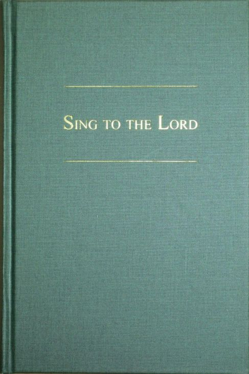

“Let the word of Christ dwell in you richly, teaching and admonishing one another in all wisdom, singing psalms and hymns and spiritual songs, with thankfulness in your hearts to God.” (Colossians 3:16)
Sing to the Lord is a ‘psalter hymnal’, meaning that it contains arrangements of both the biblical psalms set to music, and also a wide variety of Christian hymns that express sound biblical thought, taken from the whole history of the Christian church. It was first printed in 2013.
The hymnal was made to be suitable for use in the Christian worship of God. It was created by the Reformed Churches of New Zealand for their own use and for the benefit of all Christians.
Many of the psalms and hymns are available online, as copyright restrictions allow. If you wish to purchase a copy of this hymnal, please email the administrator.This website also provides supplementary information on Sing to the Lord such as musicians’ resources and some background and key features of the hymnal.
If you wish to contact someone regarding this hymnal, refer to committee membership and contact list.